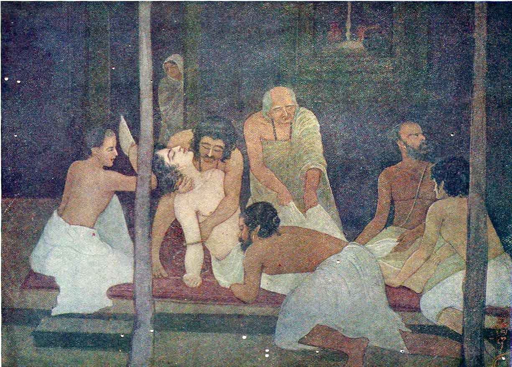

‘Chiatanya’s
First Vision’
A favourite theme for the Benqali artists is the great Saint-Singer of Vaishnavism, Shri Chaitanya. We reproduce here one of the studies of an episode in the life of this ‘God- intoxicated’ soul from the brush of Sjt Promode Kumar Chatterjea. The saint swoons and falls unconscious as the result of his first vision of the Lord. The disciples hold him in reverence and gather round him in startled surprise. His mother is anxiously witnessing the scene from inside the house.
The picture is rendered in the usual strong manner characteristic of the artist. There is a boldness in the colour-scheme and the grouping is admirable. The incident is one of sacred import and the artist has successfully attempted to depict the quiet peacefulness of the occasion in ‘cool’ colours.
A good picture by a great artist.
G. V.